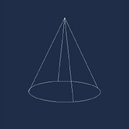

Using LineBatch
LineBatch only can be used from code. In the scene RenderManager you will find the LineBatch3D to draw lines in 3d space and the LineBatch2D to draw lines in 2d space.
If you want to add a debug or helper mode to your entity, you can add a Drawable3D component to your scene and from this you will be access to the linebatch:
The following example draw a red line from (0,0,0) to (0,1,0)
From your scene.cs
protected override void CreateScene()
{
...
// Add dummy entity to your scene
var dummyEntity = new Entity()
.AddComponent(new Transform3D())
.AddComponent(new MyDrawable());
this.Managers.EntityManager.Add(dummyEntity);
}
Drawable component implementation
// Drawable component using lineBatch3D
public class MyDrawable : Drawable3D
{
public override void Draw(DrawContext drawContext)
{
this.RenderManager.LineBatch3D.DrawLine(Vector3.Zero, Vector3.Up, Color.Red);
}
}
The lineBatch3D not only draw lines but can also draw Point, Sphere, Box ... And LineBatch2D is similar but with shapes (Circle, Square ...)
Note
LineBatch3D must be used with Drawable3D and LineBatch2D with Drawable2D_
LineBatch
This section shows with examples all geometries that LineBatch can draw:
DrawArc
Vector3 origin = Vector3.Zero;
Color color = Color.White;
this.RenderManager.LineBatch3D.DrawArc(ref origin, 0.5f, 0.5f, ref color);
DrawAxis
this.RenderManager.LineBatch3D.DrawAxis(Matrix4x4.Identity, 1.0f);
DrawBoundingBox
this.RenderManager.LineBatch3D.DrawBoundingBox(new BoundingBox(Vector3.Zero, Vector3.One), Color.White);

DrawBoundingFrustum
this.RenderManager.LineBatch3D.DrawBoundingFrustum(new BoundingFrustum(Matrix4x4.Identity), Color.White);
DrawBoundingOrientedBox
this.RenderManager.LineBatch3D.DrawBoundingOrientedBox(new BoundingOrientedBox(Vector3.Zero, Vector3.One * 0.5f, Quaternion.CreateFromAxisAngle(Vector3.Right, MathHelper.PiOver4)), Color.White);
DrawBoundingSphere
this.RenderManager.LineBatch3D.DrawBoundingSphere(new BoundingSphere(Vector3.Zero, 1.0f), Color.White);

DrawRectangle
this.RenderManager.LineBatch3D.DrawRectangle(Vector3.Zero, Vector3.One, Color.White);
DrawCircle
this.RenderManager.LineBatch3D.DrawCircle(Vector3.Zero, 1.0f, Color.White);
DrawCone
this.RenderManager.LineBatch3D.DrawCone(0.5f, 1.0f, Vector3.Zero, Vector3.Down, Color.White);

DrawCube
this.RenderManager.LineBatch3D.DrawCube(Vector3.Zero, Vector3.One, Color.White);
DrawForward
this.RenderManager.LineBatch3D.DrawForward(Matrix4x4.Identity, 1.0f);
DrawPoint
this.RenderManager.LineBatch3D.DrawPoint(Vector3.Zero, 0.5f, Color.White);
DrawRay
this.RenderManager.LineBatch3D.DrawRay(Vector3.Zero, Vector3.Forward, Color.White);
DrawTriangle
this.RenderManager.LineBatch3D.DrawTriangle(new Vector3(-0.5f, 0, 0), new Vector3(0, 1.0f, 0), new Vector3(0.5f, 0, 0), Color.White);